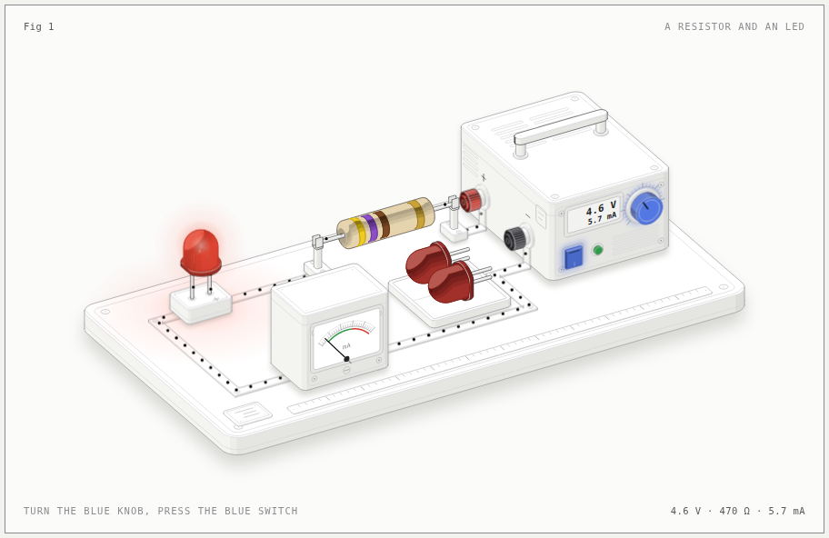
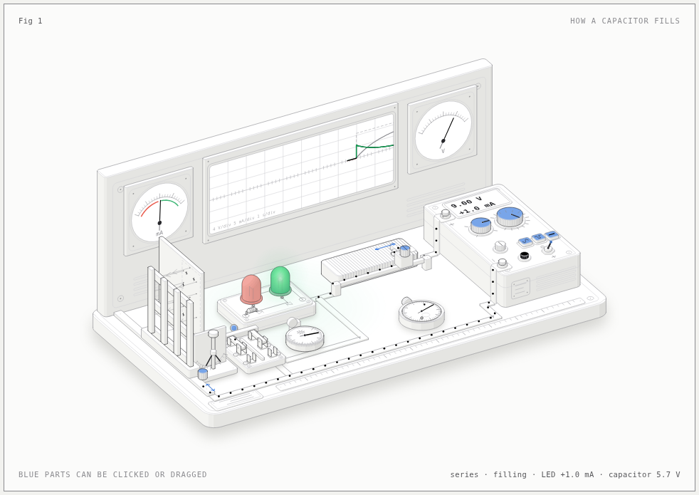
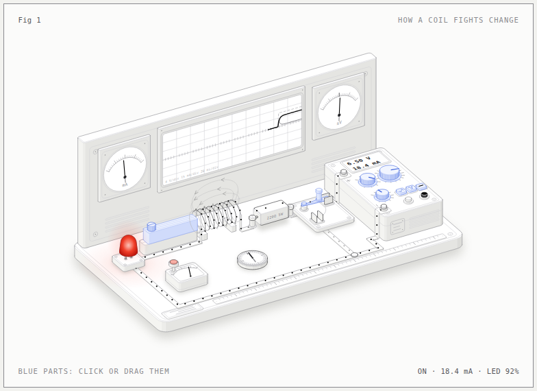
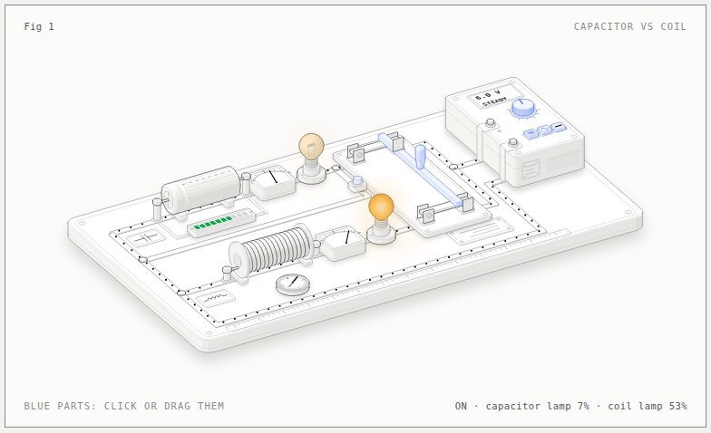
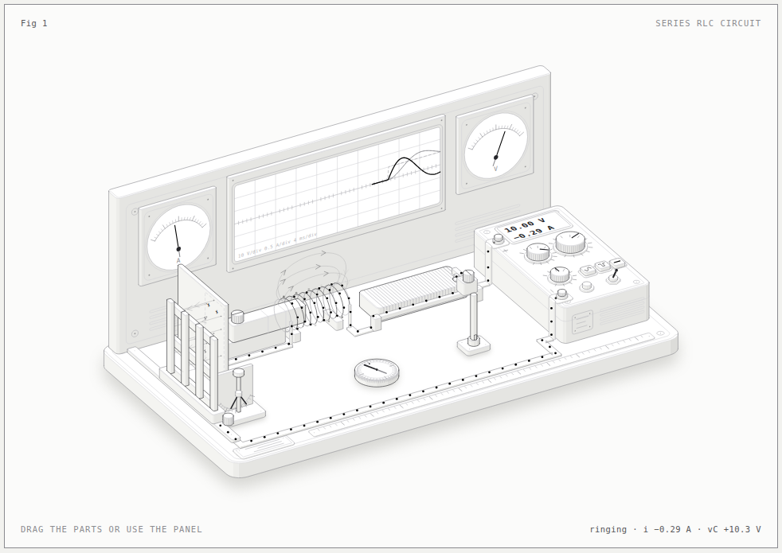

How a resistor works
Change the voltage or the resistor and see how bright the LED gets, and what happens when too much current burns it out.
Little workbenches you can play with. Turn knobs, flip switches, and watch the current move, the lamps glow and the meters swing.
Parts coloured blue are the ones you can click or drag.

Change the voltage or the resistor and see how bright the LED gets, and what happens when too much current burns it out.

Watch a capacitor fill and empty: the green LED lights while it fills, the red one while it empties.

A coil doesn't like sudden changes. The LED is slow to light up, and keeps glowing for a moment after you switch off.

Both parts side by side. Try steady power, a slow wiggle or a fast wiggle, and compare how differently they react.

Energy sloshes between the coil and the capacitor. The oscilloscope shows the current ringing and fading away.